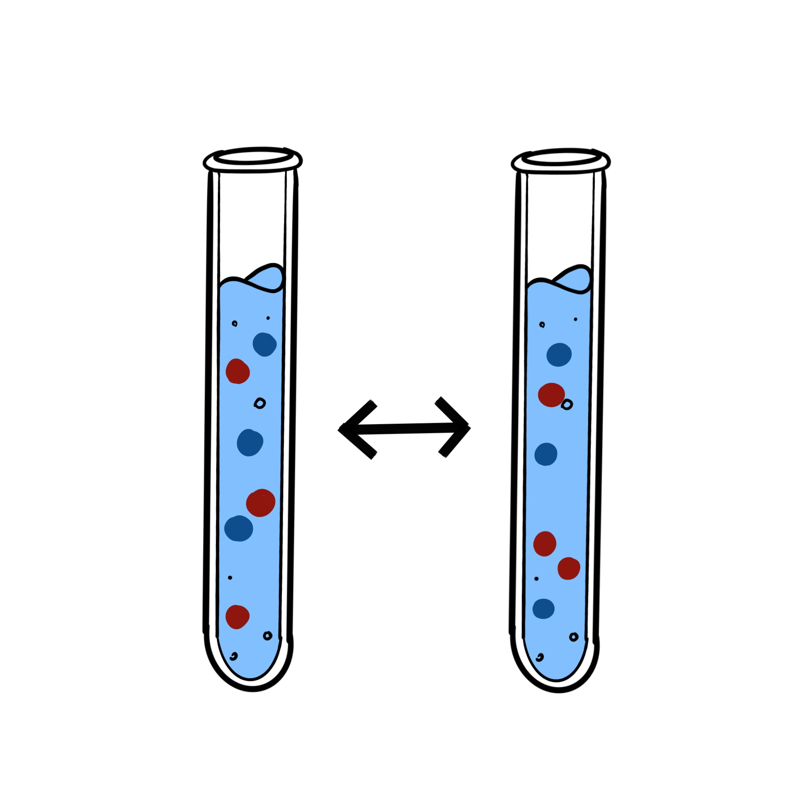
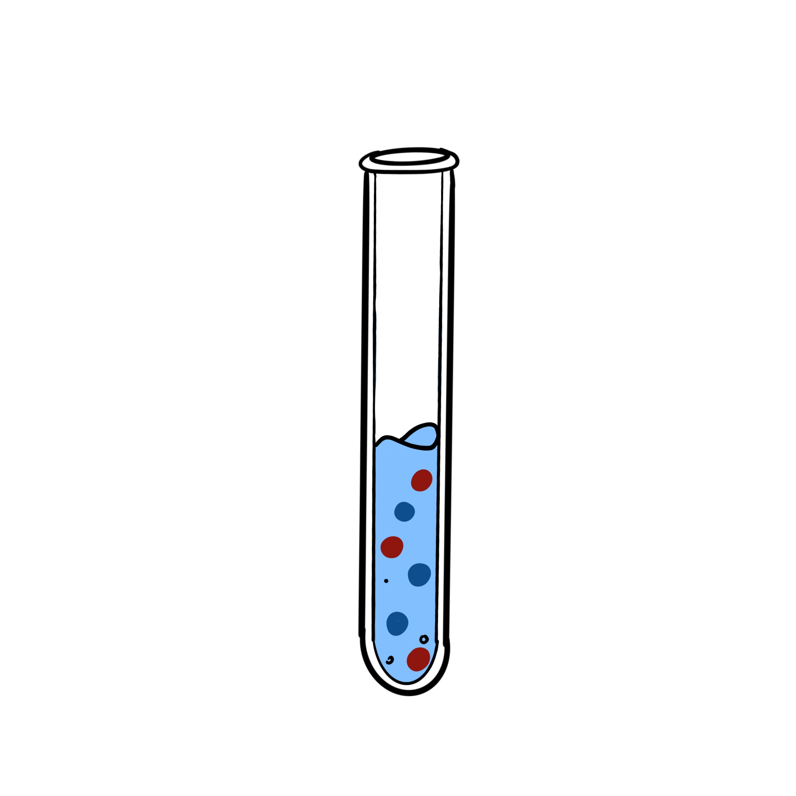
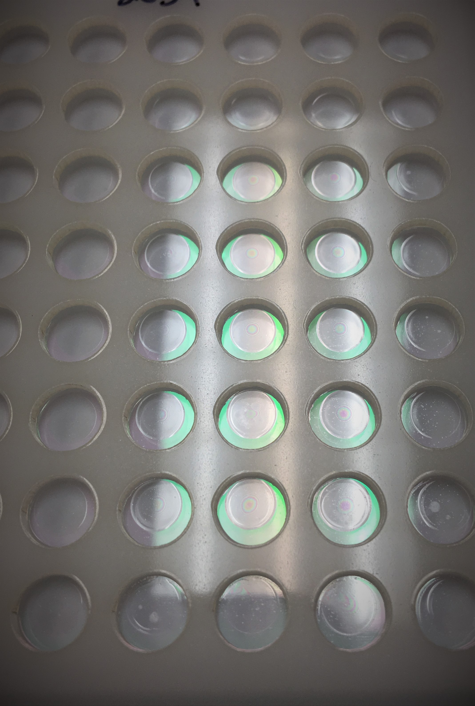
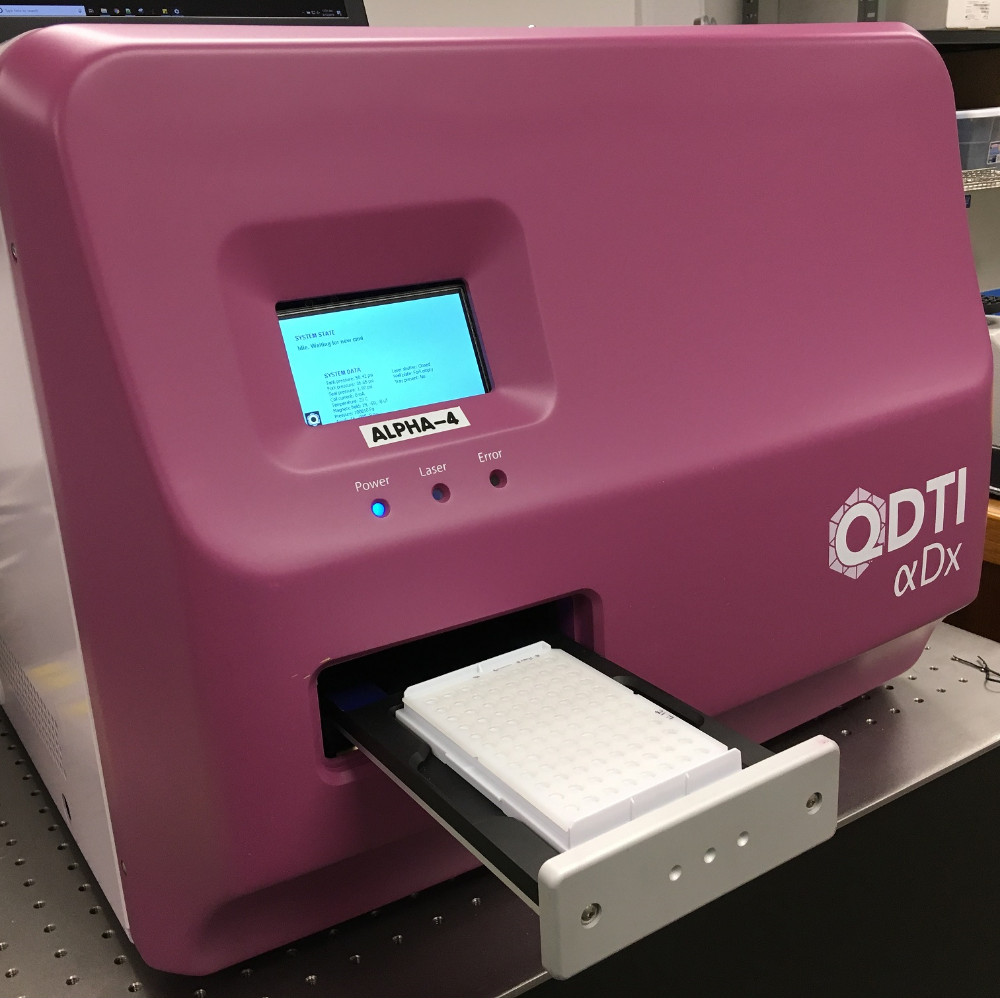
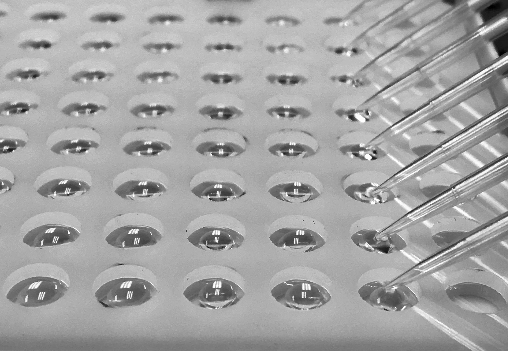
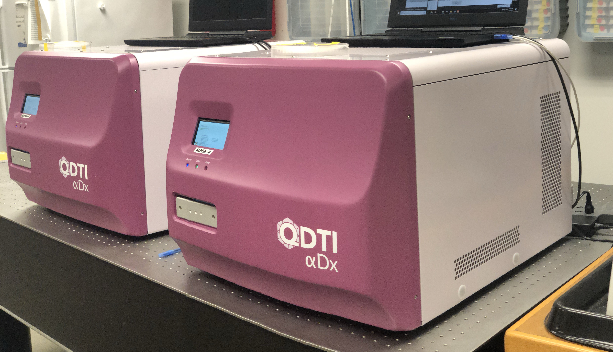

Quantum Diamond Technologies
New quantum technologies are coming online at an accelerating pace after years of intensive research. Powered by the fundamental properties of quantum mechanics, these systems will revolutionize the ways we process and transmit information, and allow us to make faster and more precise measurements about the world around us.
Quantum Diamond Technologies Inc. (QDTI) exploits quantum systems engineered into diamond crystal – called nitrogen vacancy (NV) centers – based on world-leading research at Harvard University. QDTI is using NV center technology to build a quantum sensor capability with the potential to disrupt the biomarker detection and medical diagnostics fields.
QDTI imaging technology
NV centers are tiny defects in the diamond crystal whose electronic states measure the local environment with very high sensitivity and spatial resolution. To make the imaging platform, QDTI uses billions of NV centers just below the surface of a synthetic diamond sensor. The quantum sensor-doped sensor can rapidly image magnetic fields from objects as small as a few nanometers. The NV imager acts like a magnetic microscope – making detailed images of magnetic fields instead of light – with unrivaled sensitivity and throughput.
QDTI is leveraging this versatile NV magnetic imaging technology to create a novel, ultrasensitive biomaterial detection and diagnostics platform.
Magnetic-based immunoassay detection
Current ultrasensitive diagnostic technologies require many washing steps and complex sample preparation. This results in assays that are slow, cumbersome and costly.
QDTI leverages decades of immunoassay tool development but replaces standard optical labels with novel magnetic ones that are custom-engineered to make tiny, precisely controlled magnetic fields.
The NV-center powered imaging platform counts these magnetic tags rapidly, reliably, and in a manner compatible with biological samples.
The end result is an ultrasensitive detection platform that requires minimal sample processing and substantially reduced technician time.
QDTI is currently developing a new wave of protein immunoassays to meet specific user demands. Contact us regarding your protein assay requirements. In the future we will also be providing research assay testing services and providing customers a DIY testing kit to run on the QDTI platform.
Why QDTI?
QDTI’s quantum sensor overcomes obstacles that
have limited conventional diagnostics
approaches for decades.
Biomolecules are tiny. In order to detect them, tags - antibodies linked to a label that can be measured directly - that bind to a biomolecule target of interest are used. Most systems use fluorescent tags so that the tag-target complexes can be detected optically. The presence of a certain protein, for example, can be quantified by measuring the amount of optical fluorescence from the tags which have been coupled to the target protein.
Unfortunately, biofluids such as blood, which clinicians would like to measure for certain biomolecules, are inherently “noisy” in optical measurement channels due to the presence of intrinsically auto-fluorescent contaminants. As a result, optical detection technologies need numerous wash steps in order to remove background and to enrich for biomolecule target-tag complexes before a true optical based signal can be observed.
QDTI side-steps these problems by using magnetic tags which can be directly imaged using its NV sensor technology. There are no appreciable magnetic backgrounds to overcome in biological fluids, so it is much easier to see the true signals from targets without all of the background optical noise.
Ultra simple sample preparation
The QDTI magnetic assay requires minimal sample processing before it is measured. Many existing systems have a large number of steps that require technician time before the test can be performed.
1. Add sample,
beads & mix

2. Pellet &
re-suspend

3. Transfer to
cartridge & dry

4. Image &
measure

Minimal sample input
Since the sample is not being repeatedly washed before reading, there is little loss of material. The QDTI diagnostic protocol requires only a few microliters of to perform the assay – a critical benefit when sample availability is limited.
Ultrasensitive detection of low-concentration biomarkers
In addition to dramatically reduced sample prep and sample input needs, the QDTI system can deliver ultrasensitive performance without the attendant complexity and costs. This capability offers new diagnostic tools for improved clinical decisions and better patient health.
Flexibility in biomarker targets
QDTI is building an open platform right from the start. Users will be able to use the QDTI technology platform to build their own assays for their own drug discovery, companion diagnostics, or other application needs. In addition to proteins, the QDTI system will also be able to provide detection for nucleic acids and cells – all on the same detection platform.
Reducing diagnostics costs
Existing high-sensitivity diagnostics require skilled technicians and many processing steps, which increase the time to result and the assay costs. The simpler magnetic assay delivers similar results at lower total cost, and with much less biowaste and use of plastics.
Meet the Team
Core Team
John Pena
Chief Executive Officer
LinkedIn
Seabron Adamson
Chief Financial Officer
LinkedIn
Jeff Randall
Lead Scientist
Assay Biochemistry
LinkedIn

Advisory Board
September 2017
NIST awards a Phase II grant to support QDTI’s development of NV imaging
November 2017
NSF awards QDTI a grant to support rapid sample transfer for quantum magnetic sensors
July 2018

The MassVentures START program awards QDTI $100k
Contact Us
28 Dane Street Somerville,
MA 02143